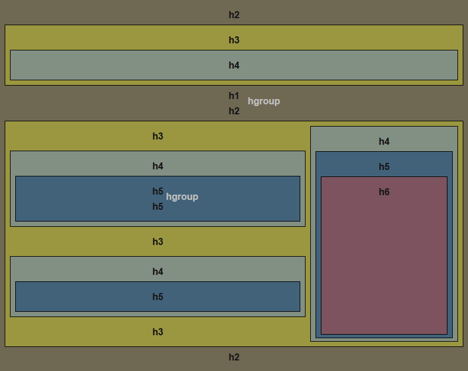
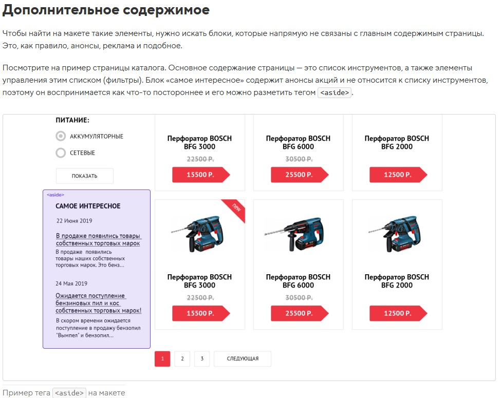

Изменять порядок элементов в разметке нежелательно — с точки зрения семантики, первым должен идти заголовок раздела, а уже потом все относящиеся к нему элементы. Как быть? Изменим визуальный порядок элементов!
header-ierarchy
классы у header, footer -
Если вы не хотите использовать классы для шапки и подвала сайта, то можете использовать селекторы body > header и body > footer. Эти селекторы не повлияют на хедеры и футеры, вложенные более глубоко.
main - основное содержание сайта
может использоваться на странице только один раз
nav - элемент для навигационных блоков
Меню и блоки ссылок лучше оборачивать не в дивы, а в nav.
article - самостоятельный, цельный и независимый раздел документа (cтатья, пост в блоге, сообщение на форуме).
Так как article должен быть независимым, то при разметке удобно считать его отдельной и самостоятельной страницей сайта. При этом иерархия заголовков на всей нашей странице должна быть «сквозная», то есть внутри article заголовок будет «очередного» уровня (соблюдать иерархию заголовков).
aside - дополнительное содержание
не связанное напрямую с основным (сайдбар, боковыми панель)
div - универсальный контейнер. В него можно положить любые другие теги и просто текст.
Чаще всего дивы используются для группировки крупных блоков. Отсутствует собственный смысл, поэтому его дополняют «говорящим» классом.
p - разметка обычных абзацев в текстах
контейнер для группировки небольших текстовых элементов
span - это не контейнер, а фрагмент текста. Им можно выделять элементы внутри текстового потока. С помощью div и p такие выделения делать нельзя.
span выделяют словосочетания. Отсутствует собственный смысл, поэтому почти всегда его дополняют «говорящим» классом.
inline -
- Не реагируют на width и height.
- margin - воспринимая только горизонтальные отступы.
- padding - воспринимая только горизонтальные отступы.
- При задании вертикальных padding визуально увеличиваются, но без увеличения занимаемого места(не отталкивают другие элементы).
- Воспринимают рамки. Аналогично padding рамки сверху и снизу не увеличивают занимаемое элементом место.
Если зафлоатить строчный элемент, то он начинает вести себя как блочный (воспринимать размеры и отступы).
абсолютно спозицыонированный инлайн или инлайнблок ведет себя как блочный(принимает высоту и ширину)
inline-block -
Снаружи как обычные строчные, но внутри они ведут себя как блочные.
Каждый элемент с inlune-block воспринимается браузером как один символ или слово, из-за этого между inline-block элементами появзяется отступ, этот отступ это line-height; статья
- не центруются с помощью
margin: 0 auto; - можно задавать размеры, рамки и отступы, как и элементам с блочным боксом
- ширина по умолчанию зависит от содержания
- элементы в одной строке выравниваются вертикально подобно элементам со строчным боксом.
От строчных им достались следующие черты:
- по ширине они ужимаются под своё содержимое;
- могут располагаться в одну строку;
- реагируют на вертикальное выравнивание, vertical-align;
- реагируют на горизонтальное выравнивание, text-align, заданное у родителя.
От блочных:
- им можно задавать размеры с помощью width и height;
- а также внешние и внутренние отступы и рамки, которые работают во всех направлениях и увеличивают размер элемента.
block -
margin: 0 auto;
такое действует только на display: block;(возможно и внутри flex)